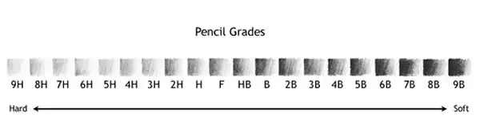
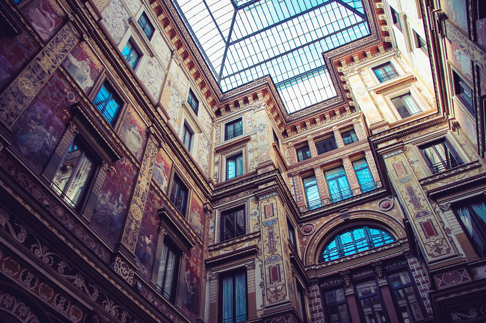
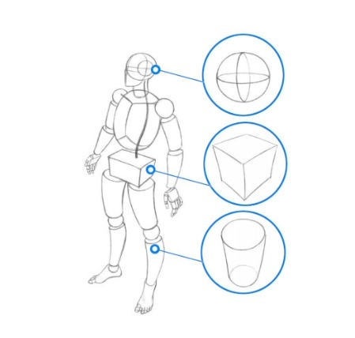
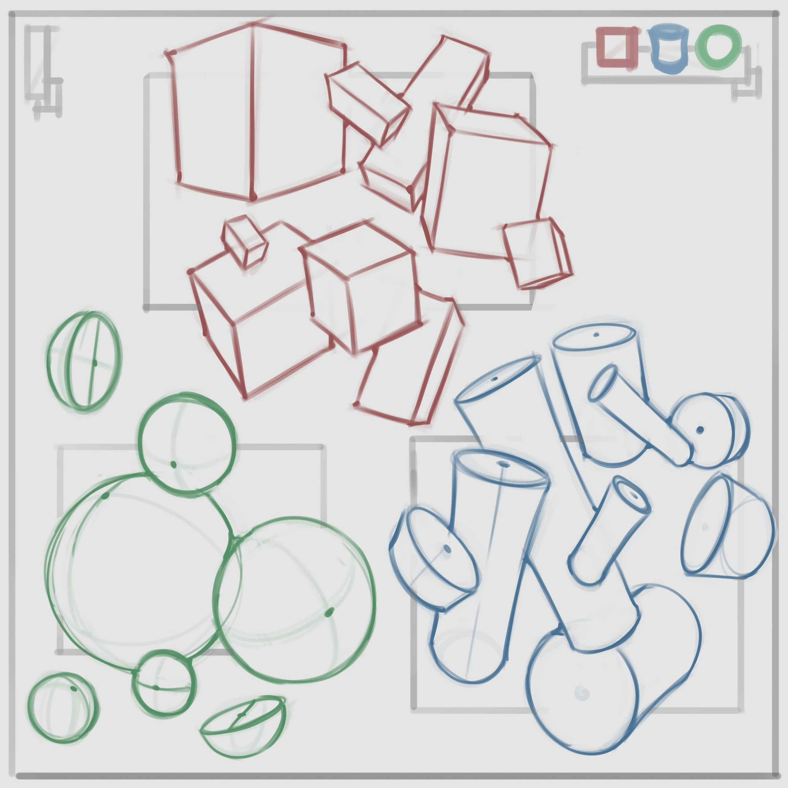
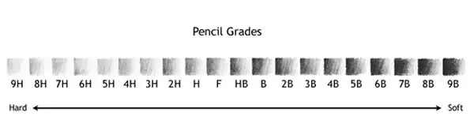
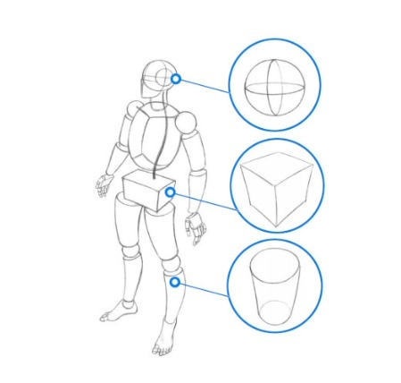
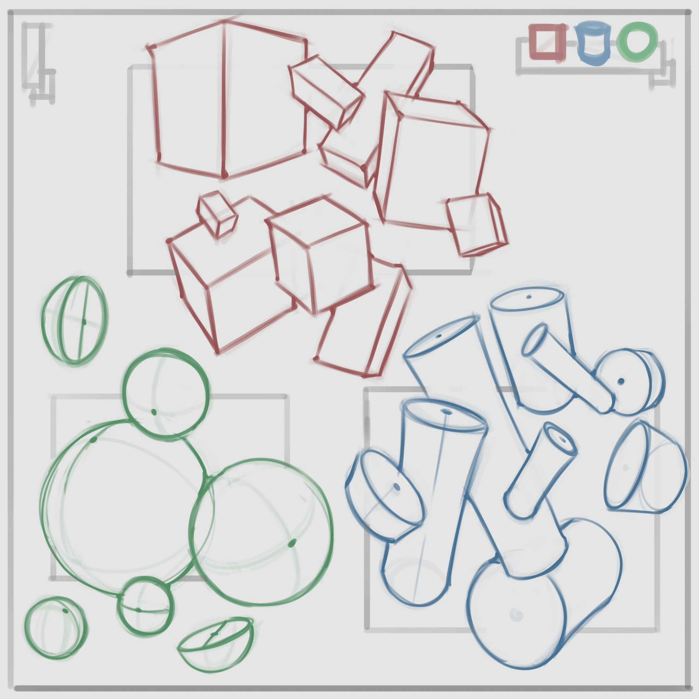

Melhore suas técnicas com algumas dicas!
- • Utilize seus materiais necessários, sabendo para o que cada um serve. Temos um exemplo sobre os diferentes tipos de lápis:
Os da linha B são mais macios que os da linha H. A linha B é recomendada para gradientes e sombras, e quanto maior o número, mais escuro as sombras poderão ser.
As da linha H são recomendadas para os rascunhos.

- • Procure aprender sobre ponto de fuga, ponto de vista e linhas de horizonte para a perspectiva. Recomendamos vídeos no youtube e blogs.

- • Ao começar o rascunho, foque primeiro nas formas geométricas de cada elemento, e depois adicione os detalhes. Dessa forma a proporção sairá melhor. Segue um exemplo:



 